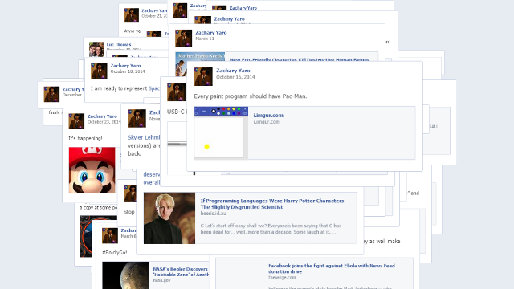

Apps
Some of these are serious apps for serious work, some are proofs of concepts, and some exist just for fun. All exist because one day I decided there was a thing that needed doing and I would make an app to do that thing.
If one of them has been useful for you, please consider buying me a cuppa.


Experiments and Proofs-Of-Concepts
Sometimes the goal is less about making a full product and more about just making an idea work.
-


EarZ
Song search for humans—look up songs by lyric or melody -


Faceball
Your Facebook timeline from a nonlinear, nonsubjective viewpoint -
NeighborZ
NeighborZ simulates tolerance and self-segregation in communities with basic AI agents. Based on an AI project from Dr. Shane Torbert.
-
SentimentViz
A rough attempt to create a live visualization of the positive and negative sentiments in a passage using the Python NLTK and TextBlob NLP libraries.
-
ScreenTxtZ
ScreenTxtZ (read “screen texts”) is a tool for displaying a message across multiple displays and updating it in real-time. The control panel at /settings allows the user to control the font, colors, and message text. It also includes controls for generating multiple display windows to fit within the screen. Opening a browser window to /disp#n will show the nth character of the message. Display windows will update in real-time (assuming the computer stays online and there is no glitch in the App Engine Channel).
ScreenTxtZ uses the Google App Engine Channel API to update the displays live as the message is typed. Identifiers for users' active displays are stored in the App Engine datastore. When the message or another property is updated, the update gets sent to each display via its channel. Using the Channel API is much more efficient than polling and easier to implement across browsers than WebSockets (or, rather, it was at the time).
The source code is available on GitHub.
Tiny Bits
Sometimes there is an idea that absolutely does not need to exist, but you just feel like making something.
-


Birthday Quilt Generator
Generate a colorful quilt from friends' birthdays -
Shakespearean Insult Generator
Why use the boring, common, overused curse words of today? This app generates Shakespearean-sounding insults that will make your insult much more memorable, won't get censored (probably), and are just generally more fun!
-
Fourier Transform
It makes numbers more foury. Inspired by this Saturday Morning Breakfast Cereal comic.
-
Sax-Ood Roll
The music from the “saxroll” meme combined with the dancing Ood from the 2009 Doctor Who cast and crew special.
-
RuPaul Game
An automated version of the game where you swap RuPaul's Drag Race with other things that include the creator or a character's name (e.g., “RuPaul's Cool Game For Attractive People”).
-
Poi Move Generator
Generate random poi moves that may or may not be physically possible.
All apps here are WOMM certified.